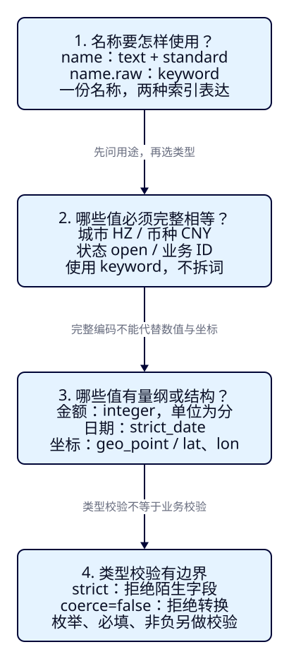
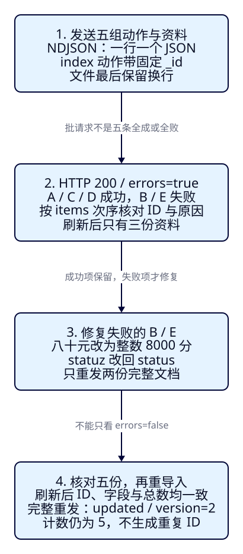

景点信息应该怎样存，
才能支持后面的搜索？
F03 只让一条“杭州西湖”进入 ES。游客接下来会问“杭州有哪些景点、200 元以内、现在可游玩、离我近吗？”如果金额写成“八十元”，城市被当作普通文章，或者下架状态拼错了，后面的查询就没有可靠的数据可用。本课先约定字段的含义，再把前两课的五份景点导入，并学会发现和修复部分失败。
本课目标
- 为名称、编码、金额、状态、日期与坐标选择字段类型，解释 text/keyword、多字段与单位的关系。
- 读懂 Bulk 的动作行、资料行和每条结果，修复失败项后核对五份资料，说明固定 ID 重导入为何不增加条数。
- 区分动态推断、strict、类型校验与业务校验；能在误建类型后用新索引恢复，并点名清理重做。
本课准备搜索资料；关键词、组合筛选与正式排序分别从 F05/F06/F10 展开。仍然直接使用 REST，无需 Java、数据库或中文插件；本机展示壳在 F07 提供，Pages 只承载讲解和复制。
云容器缺少 /proc/self/coredump_filter，ES 9.4.0 在 HTTP 启动前退出。下面的 ID、计数与错误对照均标为预测；代码、图解和阅读检查另行验收。请在本机按顺序核对，不能用 F03 的旧响应认定 F04 已通过。阻塞证据与作者复现。
展开本课目录
1. f04-c01：先约定五份资料是什么意思
保留 F02 的 A–E，新增教学入库日期和坐标，不改变金额、城市、状态与文档 ID。价格、日期、坐标都是固定教学样本，不代表实时票价、实际开放日期或导航位置。我们先保证五份资料能按相同规则进入 ES；“能导入”和“已满足游客筛选”分两步判断。
| 样本 / 固定 ID | 名称 / 城市 | 门票（分）/ 状态 |
|---|---|---|
| A · a-hz-xihu | 杭州西湖 / HZ | 0 / open |
| B · a-hz-tea | 湖畔茶园 / HZ | 8000 / open |
| C · a-fz-xihu | 福州西湖 / FZ | 0 / open |
| D · a-hz-night | 西湖夜游 / HZ | 26000 / open |
| E · a-hz-old | 西湖旧展馆 / HZ | 6000 / offline |
完整资料在 attractions.json。E 下架了仍会导入，因为它也是我们需要表达的一种业务状态；以后由查询明确排除。ES 不理解“offline 就不能展示”，也不会自动把杭州与 HZ 视为同一个编码。
{
"attraction_id": "a-hz-tea",
"name": "湖畔茶园",
"city_code": "HZ",
"ticket_price_fen": 8000,
"currency": "CNY",
"status": "open",
"description": "游览后可前往西湖。",
"published_on": "2026-10-01",
"location": {
"lat": 30.24,
"lon": 120.14
}
}2. 名称既要按词找，又要按完整值使用
text 用于需要分析的文本：名称与描述经过 standard 分析器，形成检索用的词项。keyword 用于完整值：城市编码、状态、币种和 ID 都要按完整编码判断，不应该被拆成词。类型由使用方式决定；看起来都是 JSON 字符串，不代表搜索方式相同。
名称有时还要按完整字符串统计、比较或排序。因此本课让 name 保持 text，同时添加 keyword 子字段 name.raw，这叫多字段：同一个源值采用不同的索引表达。raw 是我们起的子字段名，没有特殊魔法；JSON 中只写 name，不要再提交一个 name.raw 属性。
以 B 为例，_source.name 仍是“湖畔茶园”，name.raw 保存供完整值操作使用的表达。_source 是我们提交资料的原貌，不是分析后的词项表，也不会因为增加多字段而多出同名源字段。本课核对时用 docvalue_fields 取回 keyword 子字段的值；字段的列式读取机制以后再深入，不必把它当作第二份景点。

3. 数值有单位，日期与坐标有格式
| 字段 / 类型 | 本课约定 | 要避免的误解 |
|---|---|---|
| ticket_price_fen / integer | 人民币分；8000 表示80元；currency=CNY | 不是8000元，也不是“80元”的字符串 |
| published_on / date | 教学入库日，strict_date 格式 yyyy-MM-dd | 不是营业时段或酒店入住时间 |
| location / geo_point | 对象写 lat 纬度、lon 经度 | 不是任意两个数的普通对象 |
| status / keyword | 业务约定 open / offline | 类型不会自动限制枚举值 |
整数分避免本课用小数元表示价格时的单位歧义，但不是所有金额都可以随意放进 integer：它的范围为 −2147483648 到 2147483647，若业务上限超出就评估 long。设置 coerce=false 后，金额的数字字符串和小数不能靠自动转换混过关；这是本课显式配置，不是所有数值字段的默认行为。
0、缺字段、null 是三个不同的源值。0 表示已知免费；缺字段或 null 表示本课没有可用报价，不能当成免费。本课不配置 null_value，所以缺失和 null 都没有金额的可检索值，而数值0有。_source 仍能区分“没这个属性”和“属性值为 null”；后续预算筛选必须考虑缺价。
date 会解析日期，内部用于索引与比较的是时间数值，不是按字符串字典顺序猜。本课只接受严格日期，诸如 2026-02-30 不合法，日期时间串也不在这个格式契约内；未提供时区和时间的日期按 UTC 的当天起点解析。_source 仍保留提交的日期字符串。旅游当地日历与逐晚区间到 F25 另讲，不能从这里推导营业时间。
geo_point 理解地理坐标；本课用对象明确顺序，例如 {"lat":30.24,"lon":120.14}。纬度范围 −90～90，经度 −180～180；本课保留默认的非法值拒绝行为。若改用数组，顺序是[lon, lat]，与对象的书写顺序不要混淆。本课不提前编写距离查询。
4. 显式 mapping：在第一条资料到达前约定规则
mapping 声明字段如何解释和建立检索表达。显式声明让金额先是整数、城市先是完整编码，不必让第一条文档替整个索引做决定。dynamic="strict" 进一步拒绝尚未声明的字段，避免把 status 拼成 statuz 后，ES 悄悄新增一个无用字段。
{
"settings": {
"number_of_shards": 1,
"number_of_replicas": 0
},
"mappings": {
"dynamic": "strict",
"properties": {
"attraction_id": {
"type": "keyword"
},
"name": {
"type": "text",
"analyzer": "standard",
"fields": {
"raw": {
"type": "keyword"
}
}
},
"city_code": {
"type": "keyword"
},
"ticket_price_fen": {
"type": "integer",
"coerce": false
},
"currency": {
"type": "keyword"
},
"status": {
"type": "keyword"
},
"description": {
"type": "text",
"analyzer": "standard"
},
"published_on": {
"type": "date",
"format": "strict_date"
},
"location": {
"type": "geo_point"
}
}
}
}settings 延续 F03 的1主/0副本；properties 列出九个源字段。strict 管“有没有声明”，字段类型管“值能否解析”；它们都不承诺文档一定包含每个字段，也没有声明状态枚举、金额非负或业务 ID 唯一约束。attraction_id 仍是普通字段，真正的写入目标由 ES _id 决定。
在仓库根目录进入工程，启动方法与 F03 相同；F04 用新索引，不要求先恢复 F03 的景点。
cd projects/travel-search
docker compose -f infra/single-node/compose.yaml up -d
bash infra/single-node/wait.sh
export ES_URL=http://127.0.0.1:19200curl --fail-with-body -sS "$ES_URL/?pretty"
curl --fail-with-body -sS -X PUT "$ES_URL/tut-f04-attractions?pretty" \
-H 'Content-Type: application/json' --data-binary @search/f04/index.json
curl --fail-with-body -sS "$ES_URL/_cluster/health/tut-f04-attractions?wait_for_status=green&timeout=30s&pretty"
curl --fail-with-body -sS "$ES_URL/tut-f04-attractions/_mapping?pretty"先核对版本9.4.0、集群 travel-search-lab；创建确认、限定索引 green 且 timed_out=false 后读 mapping。请求成功不代表五份资料已导入。若索引已存在，先判断是否要保留；确认本课数据可删后按末尾清理，不能为了跳过错误而随手换个索引名。
5. Bulk：一批传输，每条独立判断
对五份资料逐条 PUT 当然能完成导入。Bulk 把多个操作放进同一个 HTTP 请求，减少往返；它没有把五份文档变成一份，也不是数据库事务。某条失败时，其他条目可以成功，不会自动回滚整批。
本课只使用 index 动作：动作行指定固定 _id，下一行给完整文档；目标索引写在 URL。传输采用 NDJSON，一行一个独立 JSON，不是带方括号的 JSON 数组。index 的一组是两行，五组十行，最后还要有换行；缩进排版成多行会破坏协议。--data-binary 保留文件中的换行，Content-Type 用 application/x-ndjson。
{"index":{"_id":"a-hz-xihu"}}
{"attraction_id":"a-hz-xihu","name":"杭州西湖","city_code":"HZ","ticket_price_fen":0,"currency":"CNY","status":"open","description":"杭州的湖泊景点，可沿湖游览。","published_on":"2026-10-01","location":{"lat":30.25,"lon":120.15}}现在故意发送 mixed.ndjson 完整十行：B 的金额变成“八十元”，E 的状态名变成 statuz；A/C/D 保持正确。先预测：会五条全失败，还是只写进去三条？
# HTTP 200 不等于所有条目成功：逐个阅读 items。
curl --fail-with-body -sS -X POST "$ES_URL/tut-f04-attractions/_bulk?pretty" \
-H 'Content-Type: application/x-ndjson' --data-binary @data/f04/mixed.ndjson
curl --fail-with-body -sS -X POST "$ES_URL/tut-f04-attractions/_refresh?pretty"
curl --fail-with-body -sS "$ES_URL/tut-f04-attractions/_count?pretty"| 输入位置 | 预测条级结果 | 为什么 |
|---|---|---|
| A / C / D | 201 / created | 资料符合字段声明 |
| B：八十元 | 400 / 金额解析失败 | integer 不接受这段文字 |
| E：statuz | 400 / strict 拒绝新字段 | 不是已声明的 status |
以上是待验证的预测。协议完整、集群可写时，整批预计 HTTP200，但 errors=true；items 与动作的提交顺序对应，每项下面是 index 的 _id、status、result 或 error。不要按 items 的次序推断内部执行先后。B 应在 error/caused_by 中看到金额解析原因，E 应看到未声明字段；错误包装和文案以本机9.4.0原响应为准。
刷新后计数预计为3，说明成功项已保留。curl 的 fail 选项只能发现 HTTP 层错误，无法发现这批 HTTP200 内的条级失败；总耗时 took 也不能代替成功检查。若 NDJSON 本身缺末尾换行或不成对，可能整请求就被拒绝，那与本例的合法协议、文档条级错误不同。

6. 修正 B/E 后，只重发两份完整文档
修复 B：把80元按约定写为8000分；修复 E：把属性名还原为 status，值仍为 offline。retry.ndjson 只有 B/E 两组，并不是在客户端把失败响应原样发回。index 是完整替换语义，所以修复文件仍带完整资料，不能只发一个被改好的金额字段。
# 只修正失败的 B/E；index 动作后必须带完整文档，文件末尾保留换行。
curl --fail-with-body -sS -X POST "$ES_URL/tut-f04-attractions/_bulk?pretty" \
-H 'Content-Type: application/x-ndjson' --data-binary @data/f04/retry.ndjson
curl --fail-with-body -sS -X POST "$ES_URL/tut-f04-attractions/_refresh?pretty"
curl --fail-with-body -sS -X POST "$ES_URL/tut-f04-attractions/_search?pretty" \
-H 'Content-Type: application/json' --data-binary @search/f04/all.json第一次按本课顺序执行，B/E 此前没有成功文档，预计两项 created，errors=false。刷新后用下面的核对请求取回全部五条。match_all 仅表示所有文档；显式按 keyword 的 attraction_id 升序，是为了人工对照输入，不是相关性排序，也不是游客搜索效果。
{
"size": 10,
"track_total_hits": true,
"query": {
"match_all": {}
},
"sort": [
{
"attraction_id": "asc"
}
],
"docvalue_fields": [
"name.raw",
{
"field": "published_on",
"format": "strict_date"
}
]
}核对不止 count：先看搜索无超时、零分片失败、hits.total={value:5,relation:"eq"}，再确认 ID 顺序应为 a-fz-xihu、a-hz-night、a-hz-old、a-hz-tea、a-hz-xihu，逐份 _source 对照正确资料。返回的 fields["name.raw"] 应是完整名称，日期按请求格式返回；它们是字段读取结果，不应在 _source 中凭空出现新的 name.raw 属性。金额仍是整数分、下架E仍在集合内，不能因为总数对了就忽略字段错值。
本例的类型/拼写错误需要先修输入，反复重发原错误资料不会变好。临时服务故障的退避重试、重复消息和并发版本控制在后续课程系统讲。本课无并发，不能把这两次成功解释为任意生产重试都安全。
7. 再导入五份正确资料，会变成十条吗？
先预测。完整正确文件 attractions.ndjson 仍使用同一个索引和同一组 _id；每个 ID 的资料被完整替换，不会新增第二份相同 ID 的景点。
# 重导入五份完整文档，固定 ID 防止重复，不代表版本或写入成本不变。
curl --fail-with-body -sS -X POST "$ES_URL/tut-f04-attractions/_bulk?pretty" \
-H 'Content-Type: application/x-ndjson' --data-binary @data/f04/attractions.ndjson
curl --fail-with-body -sS -X POST "$ES_URL/tut-f04-attractions/_refresh?pretty"
curl --fail-with-body -sS "$ES_URL/tut-f04-attractions/_count?pretty"
curl --fail-with-body -sS "$ES_URL/tut-f04-attractions/_doc/a-hz-xihu?pretty"在刚才的起始条件下，预计五条均 updated/version=2，刷新后 count仍5；再次执行会继续增长版本，不再固定为2。固定 ID 带来的是这批资料最终内容和数量可重复，不是没有执行写入，更不防止旧资料覆盖新资料。换成自动 ID 或不同 _id 就可能重复，普通 attraction_id 字段本身不提供唯一约束。
完整重导入也不会删除“文件里已不再出现”的旧 ID；它不是一次自动集合替换。本课从空索引开始，五个 ID 已知，才可用5判断准确结果。正式全量替换、删除传播与持续更新到 F33/F36 起再设计。
8. f04-c02：strict 很严格，却不是业务校验器
用单独的 tut-f04-boundaries，沿用同一 mapping，发八组 边界资料，避免干扰主索引五条。逐条预测再观察：
| 固定测试 ID / 改动 | 预测 | 判断依据 |
|---|---|---|
| numeric-string / "8000" | 拒绝 | 本课金额 coerce=false |
| decimal / 80.5 | 拒绝 | 整数金额不允许自动截小数 |
| bad-date / 2026-02-30 | 拒绝 | 不是合法 strict_date 日期 |
| bad-geo / lat=91 | 拒绝 | 纬度越界，未启用忽略非法值 |
| business-invalid / −100，mystery | 写入成功，但业务不合格 | 负整数与任意 keyword 都符合类型 |
| missing / 没有金额字段 | 写入成功 | mapping 没有必填约束 |
| null / 金额 null | 写入成功 | 未设置 null_value，没有金额索引值 |
| zero / 金额0 | 写入成功 | 有明确的数值0 |
bash labs/f04/05-boundaries.sh预计 errors=true、四失败四成功，刷新后 count=4。看每个 items 的 ID 和原因，再看 _source 中缺字段/null/0 的区别。这里“写入成功”不等于“可以上线展示”：在组织搜索文档的应用中，还要检查金额非负、币种与单位一致、状态属于允许集合、必要字段齐全。本课保留这些反例是为了证明边界，不是要求应用接纳脏数据。
展开边界对照完整请求
curl --fail-with-body -sS -X PUT "$ES_URL/tut-f04-boundaries?pretty" \
-H 'Content-Type: application/json' --data-binary @search/f04/index.json
curl --fail-with-body -sS -X POST "$ES_URL/tut-f04-boundaries/_bulk?pretty" \
-H 'Content-Type: application/x-ndjson' --data-binary @data/f04/boundaries.ndjson
curl --fail-with-body -sS -X POST "$ES_URL/tut-f04-boundaries/_refresh?pretty"
curl --fail-with-body -sS "$ES_URL/tut-f04-boundaries/_count?pretty"
curl --fail-with-body -sS -X POST "$ES_URL/tut-f04-boundaries/_search?pretty" \
-H 'Content-Type: application/json' --data-binary @search/f04/all.json9. f04-c03：让第一条数据猜类型，会发生什么？
默认动态映射允许发现新字段，并根据第一个可用于判断的值推断类型。如果在空索引先提交 {"city_code":"HZ","ticket_price_fen":"unknown"}，默认规则会把这些普通字符串建成 text，并提供 keyword 子字段。ES 看不见你的“城市编码”和“人民币分”意图；推断成功不代表建模正确。
| 方式 | 遇到未声明字段 | 本课意义 |
|---|---|---|
| 显式 properties + dynamic=true | 已声明字段按规则，新字段仍可推断 | 只写 properties 还不足以拒绝拼写错误 |
| dynamic=strict | 拒绝带未知字段的文档 | 本课主索引在导入入口发现 statuz |
| dynamic=false | 接受源资料，新字段不动态建可检索表达 | 可留在 _source，但不能靠这个字段做正常索引检索 |
这张表解释默认与配置的区别，dynamic=false 未设为额外执行案例。动态映射还有日期检测等规则，不能把“所有 JSON 字符串必为 text”当定律。本课故意用 HZ 和 unknown 这两个不似日期的值，观察普通字符串推断。
接着尝试对原字段改类型：
{
"properties": {
"ticket_price_fen": {
"type": "integer"
}
}
}预计 PUT /tut-f04-dynamic/_mapping 返回 HTTP400，说明已存在的 text 不能原地变 integer。mapping 更新允许某些参数与新增字段，却不是任意改已索引资料的解释方式；也不要把“新增一个多字段”理解为旧文档自动补建索引表达。
恢复方法：创建新索引 tut-f04-rebuilt，先使用本课正确的完整 mapping，再把 B 的正确资料（8000分）重新写入、刷新、核对 integer 与 count=1。原错误索引保留，便于对照；新建索引不会自动搬运旧资料，更不会把 unknown 自动修成8000。这里是固定文件重导入，正式迁移/alias 切换在后续课程完成。
bash labs/f04/06-dynamic.sh展开动态映射与恢复的完整请求
# 刻意不给 properties，观察默认动态映射。
curl --fail-with-body -sS -X PUT "$ES_URL/tut-f04-dynamic?pretty" \
-H 'Content-Type: application/json' --data-binary '{"settings":{"number_of_shards":1,"number_of_replicas":0}}'
curl --fail-with-body -sS -X PUT "$ES_URL/tut-f04-dynamic/_doc/a-hz-tea?pretty" \
-H 'Content-Type: application/json' --data-binary @data/f04/dynamic.json
curl --fail-with-body -sS "$ES_URL/tut-f04-dynamic/_mapping?pretty"
# 预期 HTTP 400；省略 fail 选项以阅读 error.type，不能只看 curl 退出码。
curl -sS -X PUT "$ES_URL/tut-f04-dynamic/_mapping?pretty" \
-H 'Content-Type: application/json' --data-binary @search/f04/change-type.json
# 用新索引的正确规则重新导入正确资料；原错误索引仍在，未自动迁移。
curl --fail-with-body -sS -X PUT "$ES_URL/tut-f04-rebuilt?pretty" \
-H 'Content-Type: application/json' --data-binary @search/f04/index.json
curl --fail-with-body -sS -X PUT "$ES_URL/tut-f04-rebuilt/_doc/a-hz-tea?pretty" \
-H 'Content-Type: application/json' --data-binary @data/f04/one.json
curl --fail-with-body -sS -X POST "$ES_URL/tut-f04-rebuilt/_refresh?pretty"
curl --fail-with-body -sS "$ES_URL/tut-f04-rebuilt/_count?pretty"
curl --fail-with-body -sS "$ES_URL/tut-f04-rebuilt/_mapping?pretty"预期失败请求刻意不使用 fail 选项，便于看 JSON 的 status/error.type；curl退出0仍可能是HTTP400。动态映射说明与更新 mapping API可进一步对照允许的变更。
10. 点名清理，再从空资源完成一轮
本课四个索引互相隔离：主资料、边界反例、动态误判、新索引恢复。主流程28条HTTP请求，清理另1条；启动探测与作者额外断言读取不混入这个数。下面会删除这四个索引及其全部文档，确认本课结果不再需要后再运行：
# 仅删除本课四个索引；不存在时显式允许忽略，不影响其他课和数据卷。
curl --fail-with-body -sS -X DELETE \
"$ES_URL/tut-f04-attractions,tut-f04-boundaries,tut-f04-dynamic,tut-f04-rebuilt?ignore_unavailable=true&pretty"ignore_unavailable=true 只允许点名索引不存在，不会让失联也算成功。它不删除 F03、其他课程或数据卷，不使用通配符。完整重做：
bash labs/f04/run.sh # 首次：依次执行三案例，不自动删已有索引
bash labs/f04/cleanup.sh # 确认本课四个索引可删后执行
bash labs/f04/run.sh # 清理后的第二轮
# 做完后可 cleanup；要保留本课数据继续观察，就先不要删。
docker compose -f infra/single-node/compose.yaml stop es若中途失败，先读是连接失败、创建资源已存在，还是 Bulk 条级失败；不要盲目从头重发。本课 run 包含全部三案例，重导入的正确主资料不会被边界/动态测试改写。停专用节点会暂停同工程其他实验，但保留持久卷。
能力检查：不用逐步答案，你能证明数据可供后续搜索使用吗？
给出自己的字段契约，解释0/缺价和名称多字段；在空资源中导入混合文件，指出两项失败的 ID 与原因，修好后提交五份完整 _source 与准确总数；全量重发后说明为什么计数不增、版本增长。再举出一种 strict 仍允许的业务错误，解释误建金额类型为何需要新索引。真实响应、预测、运行失败分别记录，不能用截图或HTTP200代替判断。
练习：先判断，再展开
1. name 已经是 text，为何再加 name.raw？要在文档里写两遍名称吗？
同一名称需要分词检索与完整值操作，采用两种索引表达。只提交 name；name.raw 是 mapping 的子字段，不是第二份源资料。本课从建索引前声明它，旧文档后来新增子字段时需要另处理补建。
2. Bulk HTTP200、errors=true，能只再执行相同文件直到全绿吗？
先按 items 定位失败。类型/拼写错误不修复不会好；成功项也不会回滚。修复 B/E 的完整文档，只重发两组，再刷新核对5条及字段。临时故障的重试策略是另一类问题。
3. strict 下 ticket_price_fen=−100、status=mystery 为什么可能成功？
字段都已声明，负整数与这个字符串符合类型。strict 不检查金额非负或状态枚举；应用在组织文档时要检查业务约束。成功写入不是业务合格证明。
4. 金额为0、null、没这个字段，预算筛选可以全当免费吗？
不可以。0是明确数值，本课另外两种没有可检索金额值；null与缺字段的 _source 也不同。缺价不能自动换成0，后续查询要明确处理。
5. 动态映射把价格建成 text，能直接更新 mapping 为 integer 吗？
不能这样改变已存在字段的类型。创建正确规则的新索引、修正输入并重导入，再核对 mapping/资料/计数；本课不声称新建索引自动迁移或修正旧值。
6. 五份正确资料每次都用固定 ID 导入，是否意味着没有副作用、也会删除多余旧文档？
只在同索引同 ID、无并发且完整资料相同的前提下，最终内容与条数可重复。写入仍发生、版本增长，也可能覆盖新资料；文件中缺少的旧 ID 不会自动删除。
本课陷阱
速记与下一课
| 问题 | 本课判断 |
|---|---|
| 字段按什么选？ | text 按词；keyword 完整值；同源多字段按用途索引 |
| 金额/日期/位置？ | 整数分+币种；strict_date；geo_point 对象明确 lat/lon |
| mapping 检查什么？ | strict 管未知字段，类型管可解析；业务约束仍需应用检查 |
| 怎样可靠导入？ | NDJSON 动作/资料行与末尾换行；逐项读结果，只修复失败项 |
| 怎样证明恢复？ | 预测3→5→5；核对字段/ID/总数；新索引修正类型；清理后重做 |
先定字段含义，再看逐条结果，最后用完整资料证明导入正确。
现在五份资料具备可用于查询的字段，但“名称含西湖”和“名称完整等于西湖”还不是同一个条件。F05 将用这份语料比较 match、term 与短语，让读者先预测哪些命中，再解释查询为什么得到这个结果。
官方参考：多字段、数值转换、date、geo_point、Bulk API。实际执行条件锁定 ES9.4.0，预测与实测状态分别记录。